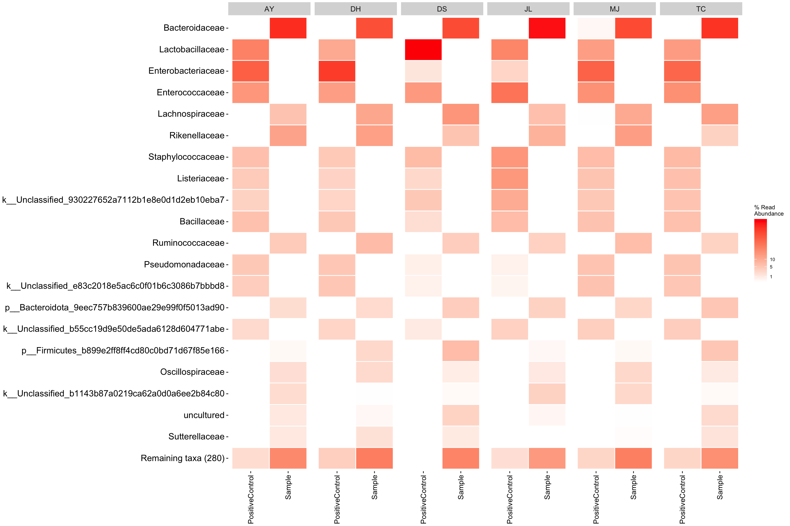
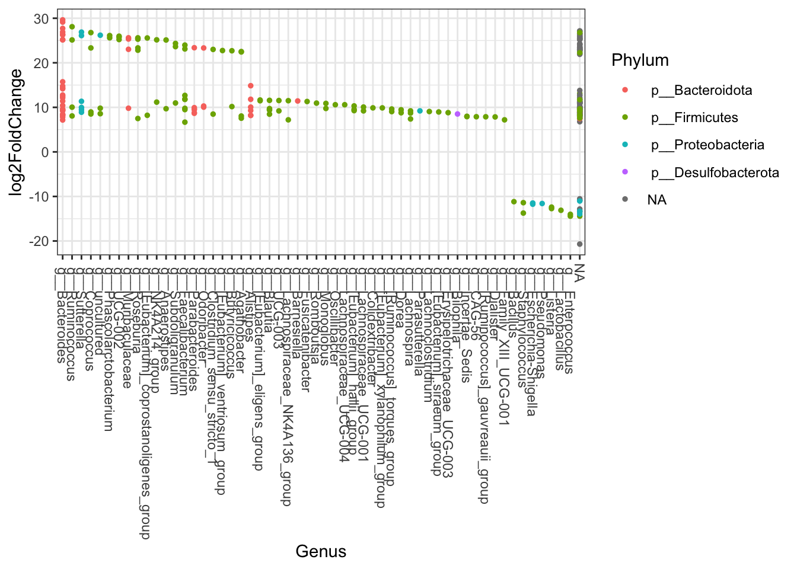

Data visualization
Visualization of microbiome data
Visualization and analysis of microbiome data.
Note this was run using R version 4.0.3 and RStudo version 1.4.
knitr::opts_chunk$set(warning = FALSE, message = FALSE)Load libraries
pkgs <- c("phyloseq", "tidyverse", "ampvis2", "ggpubr", "agricolae",
"viridis", "readr", "microbiomeutilities", "MicrobiotaProcess",
"vegan", "ape", "RColorBrewer", "DESeq2")
lapply(pkgs, require, character.only = TRUE)## [[1]]
## [1] TRUE
##
## [[2]]
## [1] TRUE
##
## [[3]]
## [1] TRUE
##
## [[4]]
## [1] TRUE
##
## [[5]]
## [1] TRUE
##
## [[6]]
## [1] TRUE
##
## [[7]]
## [1] TRUE
##
## [[8]]
## [1] TRUE
##
## [[9]]
## [1] TRUE
##
## [[10]]
## [1] TRUE
##
## [[11]]
## [1] TRUE
##
## [[12]]
## [1] TRUE
##
## [[13]]
## [1] TRUE1. Create Rdata object
Generate phyloseq object from spreadsheets.
Import ASV/OTU count data
otu_table <- read_tsv(file = "data/qiime2/feature-table/feature-table.tsv", skip = 1, col_names = TRUE)
otu_table = column_to_rownames(otu_table, var = "#OTU ID")Import taxonomy data
tax_table <- read_tsv(file = "data/qiime2/exports/taxonomy_curated.tsv", col_names = TRUE)
tax_table <- tax_table %>% separate(Taxon, sep = ";", into = c("Domain", "Phylum", "Class", "Order", "Family", "Genus", "Species"))
tax_table <- tax_table %>%
rename(ASV = `Feature ID`)
tax_table = subset(tax_table, select = -c(Confidence) )
tax_table = column_to_rownames(tax_table, var = "ASV")Add ASV sequences by reading in the .fasta file.
# read sequence file
rep.seqs <- Biostrings::readDNAStringSet("data/qiime2/exports/sequences.fasta", format = "fasta")Add rooted tree produced in QIIME2 by reading in the .nwk file.
treefile <- "data/qiime2/exported-unrooted-tree/tree.nwk"
tree <- read_tree(treefile)Import sample data making sure to add any variables as factors for downstream statistical analysis.
# read in sample data
sam_data <- read_csv("data/metadata.csv",
col_types = cols(
sample_id = col_factor(levels =c("PC","S1", "S3", "S4")),
sampleType = col_factor(levels = c("PositiveControl", "Sample")),
student = col_factor(levels = c("AY", "DH", "DS", "JL", "MJ", "TC"))))
# set sample names as col names
sam_data = column_to_rownames(sam_data, var = "sample_name")
sampledata = sample_data(data.frame(sam_data))
sampledataCreate phyloseq object
Check the class of the otumat and taxmat objects, they MUST be in matrix format. Then we can great a phyloseq object called physeq from the otu and taxonomy tables and check the sample names.
# Make OTU matrix
otumat <- as.matrix(otu_table)
# Make Tax matrix
taxmat <- as.matrix(tax_table)
class(otumat)
class(taxmat)
OTU = otu_table(otumat, taxa_are_rows = TRUE)
TAX = tax_table(taxmat)
ps = phyloseq(OTU, TAX)
ps
sample_names(ps)Now you can merge your sequence and metadata to create a final phyloseq object
ps = merge_phyloseq(ps, sampledata, rep.seqs, tree)
# Save phyloseq object
save(ps, file = "Rdata/ps.RData")2. Create visualization
Now we will go through some visualization steps of the data.
Load in Rdata object
# Load in phyloseq
load("Rdata/ps.RData")
# Create ampvis object
#require the devtools package to source gist
if(!require("devtools"))
install.packages("devtools")
#source the phyloseq_to_ampvis2() function from the gist
devtools::source_gist("8d0ca4206a66be7ff6d76fc4ab8e66c6")
# convert
ps_amp <- phyloseq_to_ampvis2(ps)Inspect data
Number of reads
This will give you an overview of the number of reads per sample and per OTU. Important to know the ‘depth’ of sequencing. Generally for amplicon 16S microbiome you want many 10’s of thousands of (good reads) per sample. The more complex the sample the more reads you need (but there is a very large variation in studies and not set rule).
readsumsdf = data.frame(nreads = sort(taxa_sums(ps), TRUE), sorted = 1:ntaxa(ps),
type = "OTUs")
readsumsdf = rbind(readsumsdf, data.frame(nreads = sort(sample_sums(ps),
TRUE), sorted = 1:nsamples(ps), type = "Samples"))
title = "Total number of reads"
nreads = ggplot(readsumsdf, aes(x = sorted, y = nreads)) + geom_bar(stat = "identity")
nreads = nreads + ggtitle(title) + scale_y_log10() + facet_wrap(~type, 1, scales = "free") + theme_bw()
nreadsRead density plot
Useful for QC purposes. This will show you the distribution of sequencing depth among samples. Ideally you want an even number of reads per sample. If you see lots of variation then library preparation needs to be optimised and you will need to perform more thorough data cleaning (i.e. rarefy reads - but this is not ideal.
Ref: McMurdie PJ, Holmes S. Waste not, want not: why rarefying microbiome data is inadmissible. PLoS Comput Biol. 2014 3;10(4):e1003531. doi: https://doi.org/10.1371/journal.pcbi.1003531.
read_distrib <- plot_read_distribution(ps, groups = "sampleType",
plot.type = "density") + theme_bw()
read_distribRarefaction
Rarefaction is a technique to assess species richness from the results of sampling - mainly used in ecology. This curve is a plot of the number of species as a function of the number of samples. Rarefaction curves generally grow rapidly at first, as the most common species are found, but the curves plateau as only the rarest species remain to be sampled. We use this plot to see if we have reached an adequate level of sequencing depth for our samples.
# set seed
set.seed(1)
# set subsample
subsamples = c(10, 5000, 10000, 20000, 30000)
rarecurve <- plot_alpha_rcurve(ps, index="observed",
subsamples = subsamples,
lower.conf = 0.025,
upper.conf = 0.975,
group="sampleType",
label.color = "brown3",
label.size = 3,
label.min = TRUE) + theme_bw()
# change color of line
mycols <- c("brown3", "steelblue")
rarecurve <- rarecurve + scale_color_manual(values = mycols) +
scale_fill_manual(values = mycols)
rarecurveIn this can we see a very low diversity of OTUs from the positive control. This would be expected as the positive control is a mock community with
Alpha diversity
Alpha diversity is the mean species diversity within a sample. There are different measurements/indexes. The most simplest being how many ASV/OTUs in each sample. Other common used measurements - chao1, shannon, inverse simpson,
Make using alpha diversity plots with statistical values using microbiomeutilities.
Produce alpha diversity plots using 4 measures - observed (i.e. number of OTUs), chao1, shannon and inverse simpson.
Statistical analysis with wilcoxon pair-wise test
mycols = c("brown3", "steelblue")
obs_alpha_plot <- plot_diversity_stats(ps, group = "sampleType",
index = "observed",
label.format="p.format",
group.colors = mycols,
stats = TRUE)
chao1_alpha_plot <- plot_diversity_stats(ps, group = "sampleType",
index = "chao1",
label.format="p.format",
group.colors = mycols,
stats = TRUE)
shan_alpha_plot <- plot_diversity_stats(ps, group = "sampleType",
index = "diversity_shannon",
label.format="p.format",
group.colors = mycols,
stats = TRUE)
invsimp_alpha_plot <- plot_diversity_stats(ps, group = "sampleType",
index = "diversity_inverse_simpson",
label.format="p.format",
group.colors = mycols,
stats = TRUE)
alphadiv_wp <- ggarrange(obs_alpha_plot, chao1_alpha_plot,
shan_alpha_plot, invsimp_alpha_plot,
ncol = 2, nrow = 2)
alphadiv_wpSave your figures directly from R for bonus points on quality data reproducibility! This line with save your combined alpha diversity plots into a directory called plots/
ggsave("alphadiv_withpvalues.pdf", plot = alphadiv_wp, path = "plots", width = 30, height = 30, units = "cm")Distribution plot
This plot is good to give you an idea of the how taxa are distribution within the data. It will give you an idea about general trends in the data and help guide how further analysis.
# Positive Control
PC_ps <- subset_samples(ps, sampleType=="PositiveControl")
PC_ps_dis <- taxa_distribution(PC_ps) +
theme_biome_utils() +
labs(title = "Positive Control")
# Faecal samples
FEC_ps <- subset_samples(ps, sampleType=="Sample")
FEC_ps_dis <- taxa_distribution(FEC_ps) +
theme_biome_utils() +
labs(title = "Faecal sample")
# Merge the plots together for publication ready figures!
distrib = ggarrange(PC_ps_dis, FEC_ps_dis, ncol = 1, nrow = 2)
distribTaxa summary
Create a bar plot of phyla - composition of taxa in positive control and samples Note that depending on your study present a barplot might a quick way to see patterns in your data generally they are not used to represent the community composition in your final figures.
Use these for visualizing at higher taxonomic levels (mostly phylum level). Remember also that you need to be careful when looking at relative microbiome abundance!
mycols <- c("brown3", "steelblue")
grp_abund <- get_group_abundances(ps,
level = "Phylum",
group="sampleType",
transform = "compositional")
mean.plot.phy <- grp_abund %>% # input data
ggplot(aes(x= reorder(OTUID, mean_abundance), # reorder based on mean abundance
y= mean_abundance,
fill=sampleType)) + # x and y axis
geom_bar(stat = "identity",
position=position_dodge()) +
scale_fill_manual("sampleType", values=mycols) + # manually specify colors
theme_bw() + # add a widely used ggplot2 theme
ylab("Mean Relative Abundance") + # label y axis
xlab("Phylum") + # label x axis
coord_flip() # rotate plot
mean.plot.phyCreate a bar plot again this time with order level taxonomic information
mycols <- c("brown3", "steelblue")
grp_abund <- get_group_abundances(ps,
level = "Order",
group="sampleType",
transform = "compositional")
mean.plot.ord <- grp_abund %>% # input data
ggplot(aes(x= reorder(OTUID, mean_abundance), # reorder based on mean abundance
y= mean_abundance,
fill=sampleType)) + # x and y axis
geom_bar(stat = "identity",
position=position_dodge()) +
scale_fill_manual("sampleType", values=mycols) + # manually specify colors
theme_bw() + # add a widely used ggplot2 theme
ylab("Mean Relative Abundance") + # label y axis
xlab("Order") + # label x axis
coord_flip() # rotate plot
mean.plot.ord
Now just a plot of the positive controls, with colours representing student preparation.
PC_ps <- subset_samples(ps, sampleType=="PositiveControl")
mycols <- c("brown3", "steelblue", "purple", "darkorange", "darkgreen", "violet")
grp_abund <- get_group_abundances(PC_ps,
level = "Order",
group="student",
transform = "compositional")
mean.plot.ord <- grp_abund %>% # input data
ggplot(aes(x= reorder(OTUID, mean_abundance), # reorder based on mean abundance
y= mean_abundance,
fill=student)) + # x and y axis
geom_bar(stat = "identity",
position=position_dodge()) +
scale_fill_manual("student", values=mycols) + # manually specify colors
theme_bw() + # add a widely used ggplot2 theme
ylab("Mean Relative Abundance") + # label y axis
xlab("Order") + # label x axis
coord_flip() # rotate plot
mean.plot.ordNow just a plot of the samples (i.e. no positive controls).
FEC_ps <- subset_samples(ps, sampleType=="Sample")
mycols <- c("brown3", "steelblue", "purple")
grp_abund <- get_group_abundances(FEC_ps,
level = "Order",
group="sample_id",
transform = "compositional")
mean.plot.ord <- grp_abund %>% # input data
ggplot(aes(x= reorder(OTUID, mean_abundance), # reorder based on mean abundance
y= mean_abundance,
fill=sample_id)) + # x and y axis
geom_bar(stat = "identity",
position=position_dodge()) +
scale_fill_manual("sample_id", values=mycols) + # manually specify colors
theme_bw() + # add a widely used ggplot2 theme
ylab("Mean Relative Abundance") + # label y axis
xlab("Order") + # label x axis
coord_flip() # rotate plot
mean.plot.ordTop taxa
Lets plot the most abundant taxa separately for each sample type. Make some comments on the value of this type of analysis and how you might interpret the data (tell me also about the type of bacteria that were identified as well).
faecal samples
mycols <- c("brown3", "steelblue", "purple", "darkorange", "darkgreen", "violet")
FEC_ps <- subset_samples(ps, sampleType=="Sample")
top_tax <- plot_taxa_boxplot(FEC_ps,
taxonomic.level = "Genus",
top.otu = 8,
group = "student",
add.violin= TRUE,
group.colors = mycols,
title = "Top six family",
keep.other = FALSE,
dot.size = 1)
top_tax
Positive control samples
mycols <- c("brown3", "steelblue", "purple", "darkorange", "darkgreen", "violet")
PC_ps <- subset_samples(ps, sampleType=="PositiveControl")
top_tax <- plot_taxa_boxplot(PC_ps,
taxonomic.level = "Genus",
top.otu = 8,
group = "student",
add.violin= TRUE,
group.colors = mycols,
title = "Top six family",
keep.other = FALSE,
dot.size = 1)
top_taxHeatmap
Rather than a barplot heatmaps are much better at presenting the microbiome composition in samples. These are commonly used in publications!
Personally Ii like the look of ampvis2 heatmap, see further info here
Here we plot the relative abundance of the top 20 taxa (aggregated at family level). Group by student and include positive control and sample.
heatmap1 <- amp_heatmap(ps_amp,
group_by = "sampleType",
facet_by = "student",
plot_values = FALSE,
tax_show = 20,
showRemainingTaxa = TRUE,
tax_aggregate = "Family",
color_vector = c("white", "red"),
plot_colorscale = "sqrt",
plot_legendbreaks = c(1, 5, 10)
)
heatmap1
This time lets just look at the fecal samples and compare the same sample_id among students.
FEC_amp <- amp_subset_samples(
ps_amp,
sampleType == "Sample")
heatmap2 <- amp_heatmap(FEC_amp,
group_by = "student",
facet_by = "sample_id",
plot_values = FALSE,
tax_show = 20,
showRemainingTaxa = TRUE,
tax_aggregate = "Family",
color_vector = c("white", "red"),
plot_colorscale = "sqrt",
plot_legendbreaks = c(1, 5, 10)
)
heatmap2
Betadiversity
Variation of microbial communities between samples. Beta diversity shows the different between microbial communities from different environments.
Distance measures Bray–Curtis dissimilarity - based on abundance or read count data - differences in microbial abundances between two samples (e.g., at species level) values are from 0 to 1 0 means both samples share the same species at exact the same abundances 1 means both samples have complete different species abundances
Jaccard distance - based on presence or absence of species (does not include abundance information) - different in microbial composition between two samples 0 means both samples share exact the same species 1 means both samples have no species in common
UniFrac - sequence distances (phylogenetic tree) - based on the fraction of branch length that is shared between two samples or unique to one or the other sample unweighted UniFrac: purely based on sequence distances (does not include abundance information) weighted UniFrac: branch lengths are weighted by relative abundances (includes both sequence and abundance information)
Ordination
Ordination methods are used to highlight differences between samples based on their microbial community composition - also referred to as distance- or (dis)similarity measures.
These techniques reduce the dimensionality of microbiome data sets so that a summary of the beta diversity relationships can be visualized in 2D or 3D plots. The principal coordinates (axis) each explains a certain fraction of the variability (formally called inertia). This creates a visual representation of the microbial community compositional differences among samples. Observations based on ordination plots can be substantiated with statistical analyses that assess the clusters.
There are many options for ordination. Broadly they can be broken into:
- Implicit and Unconstrained (exploratory)
- Principal Components Analysis (PCA) using Euclidean distance
- Correspondence Analysis (CA) using Pearson chi-squared
- Detrended Correspondence Analysis (DCA) using chi-square
- Implicit and Constrained (explanatory)
- Redundancy Analysis (RDA) using Euclidean distance
- Canonical Correspondance Analysis (CCA) using Pearson chi-squared
- Explicit and Unconstrained (exploratory)
- Principal Coordinates Analysis (PCoA)
- non-metric Multidimensional Scaling (nMDS)
- Choose your own distance measure - Bray-Curtis - takes into account abundance (in this case abundance is the number of reads) - Pearson chi-squares - statistical test on randomness of differences - Jaccard - presence/absence - Chord - UniFrac, which incorporates phylogeny. - note: if you set the distance metric to Euclidean then PCoA becomes Principal Components Analysis.
Some extra explanatory notes on PCoA and nMDS
PCoA is very similar to PCA, RDA, CA, and CCA in that they are all based on eigenan analysis: each of the resulting axes is an eigen vector associated with an eigen value, and all axes are orthogonal to each other. This means that all axes reveal unique information about the inertia in the data, and exactly how much inertia is indicated by the eigenvalue. When plotting the ordination result in an x/y scatterplot, the axis with the largest eigenvalue is plotted on the first axis, and the one with the second largest on the second axis.
NMDS attempts to represent the pairwise dissimilarity between objects in a low-dimensional space. Can use any dissimilarity coefficient or distance measure. NMDS is a rank-based approach based on an iterative algorithm. While information about the magnitude of distances is lost, rank-based methods are generally more robust to data which do not have an identifiable distribution. NMDS routines often begin by random placement of data objects in ordination space. The algorithm then begins to refine this placement by an iterative process, attempting to find an ordination in which ordinated object distances closely match the order of object dissimilarities in the original distance matrix. The stress value reflects how well the ordination summarizes the observed distances among the samples.
Detrended correspondence analysis (DCA)
Implicit and Unconstrained (exploratory)
Ordination of samples using DCA. Leave distance blank, so default is chi-square.
# Ordinate the data
set.seed(4235421)
mycols <- c("brown3", "steelblue")
# proj <- get_ordination(pseq, "MDS", "bray")
ord.dca <- ordinate(ps, "DCA")
ord_DCA = plot_ordination(ps, ord.dca, color = "sampleType") +
geom_point(size = 5) + scale_color_manual(values=mycols) + stat_ellipse() + theme_bw()
ord_DCACanonical correspondence analysis (CCA)
Implicit and Constrained (explanatory)
Ordination of samples using CCA methods using Pearson chi-squared. Constrained variable used as sampleType.
mycols <- c("brown3", "steelblue")
pseq.cca <- ordinate(ps, "CCA", cca = "sampleType")
ord_CCA <- plot_ordination(ps, pseq.cca, color = "sampleType")
ord_CCA <- ord_CCA + geom_point(size = 4) +
scale_color_manual(values=mycols) + stat_ellipse() + theme_bw()
ord_CCARedundancy analysis (RDA)
Implicit and Constrained (explanatory)
Ordination of samples using RDA methods using Euclidean distance. Constrained variable used as sampleType.
mycols <- c("brown3", "steelblue")
pseq.rda <- ordinate(ps, "RDA", cca = "sampleType")
ord_RDA <- plot_ordination(ps, pseq.rda, color = "sampleType")
ord_RDA <- ord_RDA + geom_point(size = 4) +
scale_color_manual(values=mycols) + stat_ellipse() + theme_bw()
ord_RDAPrincipal Coordinates Analysis (PCoA)
PCoA is very similar to PCA, RDA, CA, and CCA in that they are all based on eigenanalysis: each of the resulting axes is an eigenvector associated with an eigenvalue, and all axes are orthogonal to each other. This means that all axes reveal unique information about the inertia in the data, and exactly how much inertia is indicated by the eigenvalue.
Ordination of samples using PCoA methods and jaccard (presence/absence) distance measure
# Ordinate the data
set.seed(4235421)
mycols <- c("brown3", "steelblue")
# proj <- get_ordination(pseq, "MDS", "bray")
ord.pcoa.jac <- ordinate(ps, "PCoA", "jaccard")
ord_PCoA_jac = plot_ordination(ps, ord.pcoa.jac, color = "sampleType") +
geom_point(size = 5) + scale_color_manual(values=mycols) + stat_ellipse() + theme_bw()
ord_PCoA_jacOrdination of samples using PCoA methods and bray curtis (abundance) distance measure.
# Ordinate the data
set.seed(4235421)
mycols <- c("brown3", "steelblue")
ord.pcoa.bray <- ordinate(ps, "PCoA", "bray")
ord_PCoA_bray = plot_ordination(ps, ord.pcoa.bray, color = "sampleType") +
geom_point(size = 5) + scale_color_manual(values=mycols) + stat_ellipse() + theme_bw()
ord_PCoA_brayPrincipal Coordinates Analysis (PCoA) with unifrac
Unifrac analysis takes into account not only the differences in OTUs/ASVs but also takes into account the phylogeny of the taxa. I.e. how closely related are the taxa.
We can perform unweighted (using presence/absence abundance like jaccard) or weighted (incorporating abundance data - like bray curtis).
Unweighted unifrac
# Ordinate the data
set.seed(4235421)
mycols <- c("brown3", "steelblue")
ord_pcoa_ufuw <- ordinate(ps, "PCoA", "unifrac", weighted=FALSE)
ord_PCoA_ufuw = plot_ordination(ps, ord_pcoa_ufuw, color = "sampleType", shape="student") +
geom_point(size = 5) + scale_color_manual(values=mycols) + stat_ellipse() + theme_bw()
ord_PCoA_ufuwWeighted unifrac
mycols <- c("brown3", "steelblue")
ord_pcoa_ufw = ordinate(ps, "PCoA", "unifrac", weighted=TRUE)
ord_PCoA_ufw = plot_ordination(ps, ord_pcoa_ufw, color="sampleType", shape="student")
ord_PCoA_ufw <- ord_PCoA_ufw + geom_point(size = 4) +
scale_color_manual(values=mycols) + stat_ellipse() + theme_bw()
ord_PCoA_ufwNon-metric Multidimensional Scaling (nMDS)
Finally lets perform ordination using Non-metric Multidimensional Scaling. We’ll use the unifrac distance measure which takes into account phylogeny and also the WEIGHTED option.
# Ordinate the data
set.seed(4235421)
mycols <- c("brown3", "steelblue")
ord_nmds_ufw <- ordinate(ps, "NMDS", "unifrac", weighted=TRUE)## Run 0 stress 0.04237758
## Run 1 stress 0.04237758
## ... New best solution
## ... Procrustes: rmse 0.00001669474 max resid 0.0000293103
## ... Similar to previous best
## Run 2 stress 0.04521076
## Run 3 stress 0.04237758
## ... Procrustes: rmse 0.00001145389 max resid 0.00002226346
## ... Similar to previous best
## Run 4 stress 0.04237759
## ... Procrustes: rmse 0.00003141382 max resid 0.00005720641
## ... Similar to previous best
## Run 5 stress 0.04237758
## ... New best solution
## ... Procrustes: rmse 0.000005463576 max resid 0.000009778744
## ... Similar to previous best
## Run 6 stress 0.04237759
## ... Procrustes: rmse 0.00004828909 max resid 0.00008911899
## ... Similar to previous best
## Run 7 stress 0.04237758
## ... Procrustes: rmse 0.00000109208 max resid 0.000001619187
## ... Similar to previous best
## Run 8 stress 0.04237759
## ... Procrustes: rmse 0.00004477326 max resid 0.00008318192
## ... Similar to previous best
## Run 9 stress 0.207869
## Run 10 stress 0.04237758
## ... Procrustes: rmse 0.00002028912 max resid 0.00003631977
## ... Similar to previous best
## Run 11 stress 0.04521078
## Run 12 stress 0.04237758
## ... Procrustes: rmse 0.000009056286 max resid 0.00001551062
## ... Similar to previous best
## Run 13 stress 0.04521081
## Run 14 stress 0.04521076
## Run 15 stress 0.04237758
## ... Procrustes: rmse 0.00001979983 max resid 0.00003671779
## ... Similar to previous best
## Run 16 stress 0.04237759
## ... Procrustes: rmse 0.00002258803 max resid 0.00004132248
## ... Similar to previous best
## Run 17 stress 0.04237759
## ... Procrustes: rmse 0.00004928339 max resid 0.00008874097
## ... Similar to previous best
## Run 18 stress 0.04237758
## ... New best solution
## ... Procrustes: rmse 0.00001406266 max resid 0.00002569942
## ... Similar to previous best
## Run 19 stress 0.04521079
## Run 20 stress 0.04521076
## *** Solution reachedord_NMDS_ufw = plot_ordination(ps, ord_nmds_ufw, color = "sampleType", shape="student") +
geom_point(size = 5) + scale_color_manual(values=mycols) + stat_ellipse() + theme_bw()
ord_NMDS_ufwStatistical analysis
Here we’ll perform a statistical analysis on beta diversity.
See tutorial here.
Differences by sampleType using ANOVA
# Transform data to hellinger
pseq.rel <- microbiome::transform(ps, "hellinger")
# Pick relative abundances (compositional) and sample metadata
otu <- abundances(pseq.rel)
meta <- meta(pseq.rel)
# samples x SampleCategory as input
permanova <- adonis(t(otu) ~ sampleType,
data = meta, permutations=999, method = "bray")
## statistics
print(as.data.frame(permanova$aov.tab)["sampleType", "Pr(>F)"])## [1] 0.006dist <- vegdist(t(otu))
mod <- betadisper(dist, meta$sampleType)
### ANOVA - are groups different
anova(betadisper(dist, meta$sampleType))## Analysis of Variance Table
##
## Response: Distances
## Df Sum Sq Mean Sq F value Pr(>F)
## Groups 1 0.073418 0.073418 8.0901 0.01742 *
## Residuals 10 0.090750 0.009075
## ---
## Signif. codes: 0 '***' 0.001 '**' 0.01 '*' 0.05 '.' 0.1 ' ' 1Hierarchical cluster analysis
Beta diversity metrics can assess the differences between microbial communities. It can be visualized with PCA or PCoA, this can also be visualized with hierarchical clustering.
Function from MicrobiotaProcess using analysis based on ggtree.
## All samples - detailed, include species and SampleCategory
clust_all <- get_clust(obj=ps, distmethod="euclidean",
method="hellinger", hclustmethod="average")
mycols <- c("brown3", "steelblue")
# circular layout
clust_all_plot <- ggclust(obj=clust_all ,
layout = "circular",
pointsize=3,
fontsize=0,
factorNames=c("sampleType", "student")) +
scale_color_manual(values=mycols) +
scale_shape_manual(values=c(17, 15, 16, 1, 5, 6)) +
ggtitle("Hierarchical Cluster of All Samples (euclidean)")
clust_all_plot# subset just faecal samples
FEC_ps <- subset_samples(ps, sampleType=="Sample")
## All samples - detailed, include species and SampleCategory
clust_all <- get_clust(obj=FEC_ps, distmethod="euclidean",
method="hellinger", hclustmethod="average")
mycols <- c("brown3", "steelblue", "purple")
# circular layout
clust_all_plot <- ggclust(obj=clust_all ,
layout = "circular",
pointsize=3,
fontsize=0,
factorNames=c("sample_id", "student")) +
scale_color_manual(values=mycols) +
scale_shape_manual(values=c(17, 15, 16, 1, 5, 6)) +
ggtitle("Hierarchical Cluster of All Samples (euclidean)")
clust_all_plotPhylogeny
Using phylogenetic tree created in QIIME2 we will draw a quick tree with the top 10 ASVs and plot abundance of sequences per sample (colour by student initials).
FEC_ps <- subset_samples(ps, sampleType=="Sample")
FEC_ps1 = subset_taxa(FEC_ps, Domain=="d__Bacteria")
myTaxa = names(sort(taxa_sums(FEC_ps1), decreasing = TRUE)[1:10])
ex1 = prune_taxa(myTaxa, FEC_ps1)
#plot_tree(ex1, color="student", ladderize="left", size="Abundance", base.spacing=0.03) + coord_polar(theta="y")
plot_tree(ex1, color = "student", label.tips = "Phylum", ladderize = "left", justify = "left" , size = "Abundance")DESeq2
Although not really appropriate for this data set DESeq2 function is commonly used to identify drivers of differences between two groups (i.e. treatment vs control groups). Here We’ll provide example with Positive controls vs faecal samples. Further documentation here.
# Due to nature of data set there are 0 counts across ASVs in the two groups so need to artifically resolve this issue for now
gm_mean = function(x, na.rm=TRUE){
exp(sum(log(x[x > 0]), na.rm=na.rm) / length(x))
}
# Set factor for analysis
diagdds = phyloseq_to_deseq2(ps, ~ sampleType)
# calculate geometric means prior to estimate size factors
gm_mean = function(x, na.rm=TRUE){
exp(sum(log(x[x > 0]), na.rm=na.rm) / length(x))
}
geoMeans = apply(counts(diagdds), 1, gm_mean)
diagdds = estimateSizeFactors(diagdds, geoMeans = geoMeans)
diagdds = DESeq(diagdds, fitType="local")
# Investigate results table
res = results(diagdds, cooksCutoff = FALSE)
alpha = 0.01
sigtab = res[which(res$padj < alpha), ]
sigtab = cbind(as(sigtab, "data.frame"), as(tax_table(ps)[rownames(sigtab), ], "matrix"))
head(sigtab)## baseMean log2FoldChange lfcSE stat
## b0efc1502d3371ff77b7ebd8a64aa800 153.72848 11.311542 1.304953 8.668161
## e258ed2027faa84a49df596dec6808b2 65.55956 10.064371 1.512099 6.655894
## f2dd986f126e5fcab155cb1df3f4a7a6 11.28414 7.493478 2.281689 3.284180
## 8adb544da2a3158f3e73d29e1ea24c4d 14.91050 7.881371 2.813019 2.801748
## c1ad1159e0c84939459378e389b85863 49.10488 9.625606 1.897129 5.073775
## 3f698e5fcf89b15ab9d457df604da0f3 101.70914 25.603963 3.003660 8.524253
## pvalue padj Domain
## b0efc1502d3371ff77b7ebd8a64aa800 4.391562e-18 3.952406e-17 d__Bacteria
## e258ed2027faa84a49df596dec6808b2 2.815829e-11 9.200765e-11 d__Bacteria
## f2dd986f126e5fcab155cb1df3f4a7a6 1.022796e-03 2.301292e-03 d__Bacteria
## 8adb544da2a3158f3e73d29e1ea24c4d 5.082653e-03 8.903088e-03 d__Bacteria
## c1ad1159e0c84939459378e389b85863 3.900007e-07 1.136763e-06 d__Bacteria
## 3f698e5fcf89b15ab9d457df604da0f3 1.537987e-17 1.127124e-16 d__Bacteria
## Phylum Class
## b0efc1502d3371ff77b7ebd8a64aa800 p__Firmicutes c__Clostridia
## e258ed2027faa84a49df596dec6808b2 p__Firmicutes c__Clostridia
## f2dd986f126e5fcab155cb1df3f4a7a6 p__Firmicutes c__Clostridia
## 8adb544da2a3158f3e73d29e1ea24c4d p__Firmicutes c__Clostridia
## c1ad1159e0c84939459378e389b85863 p__Firmicutes c__Clostridia
## 3f698e5fcf89b15ab9d457df604da0f3 p__Firmicutes c__Clostridia
## Order Family
## b0efc1502d3371ff77b7ebd8a64aa800 o__Lachnospirales f__Lachnospiraceae
## e258ed2027faa84a49df596dec6808b2 o__Lachnospirales f__Lachnospiraceae
## f2dd986f126e5fcab155cb1df3f4a7a6 o__Lachnospirales f__Lachnospiraceae
## 8adb544da2a3158f3e73d29e1ea24c4d o__Lachnospirales f__Lachnospiraceae
## c1ad1159e0c84939459378e389b85863 o__Lachnospirales f__Lachnospiraceae
## 3f698e5fcf89b15ab9d457df604da0f3 o__Lachnospirales f__Lachnospiraceae
## Genus
## b0efc1502d3371ff77b7ebd8a64aa800 g__Fusicatenibacter
## e258ed2027faa84a49df596dec6808b2 g__Lachnospiraceae_UCG-001
## f2dd986f126e5fcab155cb1df3f4a7a6 g__Roseburia
## 8adb544da2a3158f3e73d29e1ea24c4d g__[Ruminococcus]_gauvreauii_group
## c1ad1159e0c84939459378e389b85863 g__[Ruminococcus]_torques_group
## 3f698e5fcf89b15ab9d457df604da0f3 g__Roseburia
## Species
## b0efc1502d3371ff77b7ebd8a64aa800 <NA>
## e258ed2027faa84a49df596dec6808b2 <NA>
## f2dd986f126e5fcab155cb1df3f4a7a6 s__gut_metagenome
## 8adb544da2a3158f3e73d29e1ea24c4d <NA>
## c1ad1159e0c84939459378e389b85863 <NA>
## 3f698e5fcf89b15ab9d457df604da0f3 <NA>Plot results
scale_fill_discrete <- function(palname = "Set1", ...) {
scale_fill_brewer(palette = palname, ...)
}
# Phylum order
x = tapply(sigtab$log2FoldChange, sigtab$Phylum, function(x) max(x))
x = sort(x, TRUE)
sigtab$Phylum = factor(as.character(sigtab$Phylum), levels=names(x))
# Genus order
x = tapply(sigtab$log2FoldChange, sigtab$Genus, function(x) max(x))
x = sort(x, TRUE)
sigtab$Genus = factor(as.character(sigtab$Genus), levels=names(x))
DESeq2 <- ggplot(sigtab, aes(x=Genus, y=log2FoldChange, color=Phylum)) + geom_point(size=1) + theme_bw()
DESeq2 <- DESeq2 + theme(axis.text.x = element_text(angle = -90, hjust = 0, vjust=0.5))
DESeq2

Copyright, Siobhon Egan, 2021.